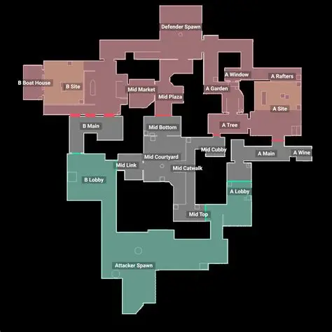
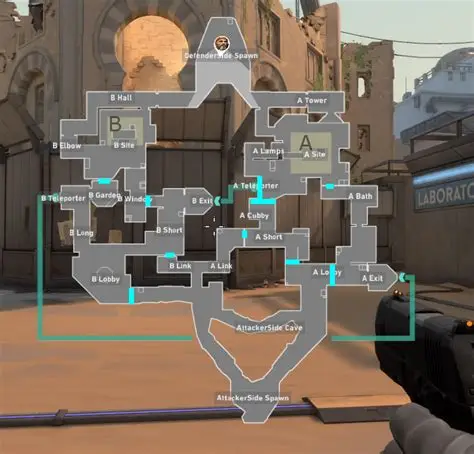
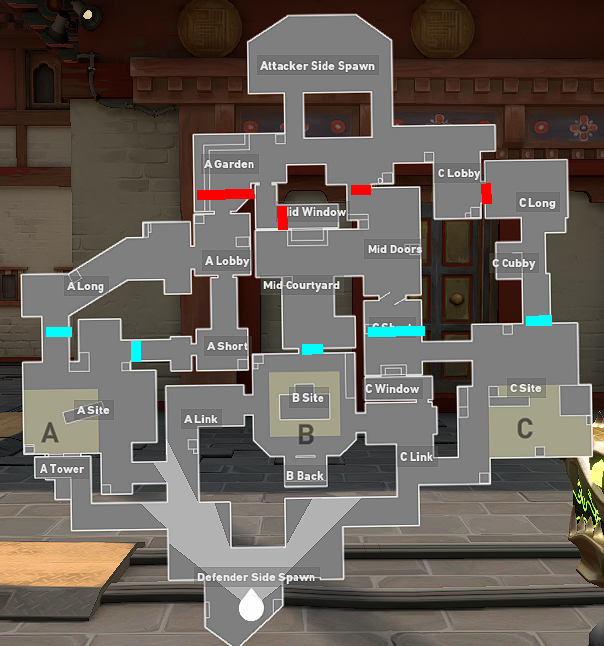
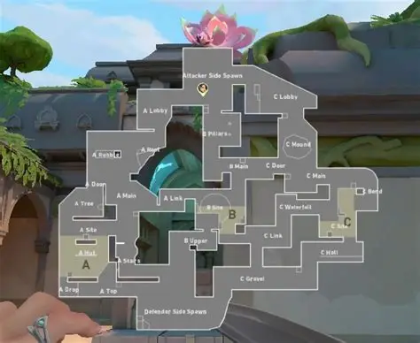
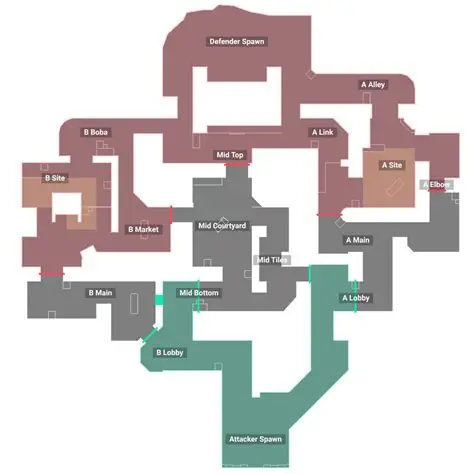
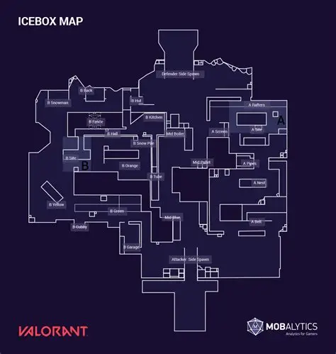

VALORANT Maps
Maps are an important part of VALORANT because every map has a different layout, design and set of strategies. Players need to learn the different sites, angles and pathways to become successful.
Most maps contain two or three bomb sites where the attacking team can plant the Spike. Defenders must protect these sites and stop the attackers from completing their objective.
Popular Maps

Ascent
Ascent is a two-site map with a large open middle area. Its doors and pathways create many opportunities for strategic plays.

Bind
Bind is known for its teleporters, which allow players to quickly travel between different areas of the map.

Haven
Haven is unique because it has three bomb sites instead of the usual two, giving attackers and defenders more strategic possibilities.

Lotus
Lotus is a three-site map featuring rotating doors and multiple routes that can be used to attack or defend. It has many chokepoints which you can abuse

Sunset
Sunset is based in Los Angeles and features two sites connected by a central area and several pathways.

Icebox
Icebox is a snowy map with vertical gameplay, ropes and many different angles for players to use.
Why Map Knowledge Matters
Learning a map allows players to understand where enemies are likely to appear and where abilities can be used effectively. Knowing common angles can also help players make better decisions during fights.
Communication is especially important when playing on unfamiliar maps. Calling out enemy locations and sharing information with teammates can help a team make better strategic decisions.
Visit the Official VALORANT Maps Page